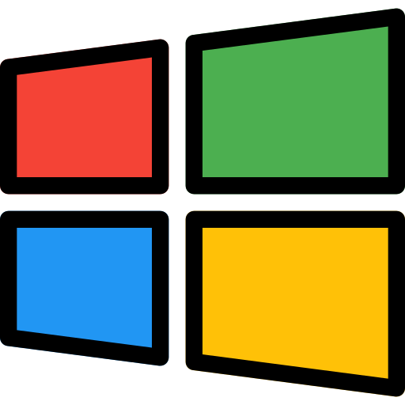

Sistemas Operacionais
Sistemas operacionais são programas de software que gerenciam os recursos de hardware de um computador e fornecem serviços aos aplicativos. Eles facilitam a interação entre o hardware e o software, permitindo que os usuários executem tarefas diversas, como acessar arquivos, executar programas e gerenciar dispositivos. Os sistemas operacionais também são responsáveis pelo gerenciamento de recursos, como memória, processador e dispositivos de entrada e saída.
História dos Sistemas Operacionais
O matemático Charles Baggage (1792-1871) dedicou sua vida a projetar o que seria o primeiro computador - sua “máquina analítica”. O projeto foi frustrado pois, além da tecnologia da época não possibilitar a criação de engrenagens precisas, seu projeto era puramente mecânico. A máquina não possuía um sistema operacional.
Eis que durante o período da II Guerra Mundial, houve algum progresso. Surgem de fato os primeiros computadores que consistiam em grandes e primitivas máquinas de calcular, utilizando-se de válvulas para se alimentar, mas ainda sem a presença dos SOs: contavam somente com linguagem de máquina pura - os jobs.
Entre 1955-1965, com a introdução dos transistores, que eram mais estáveis e possibilitaram que outras demandas além de calcular fossem executadas por eles. Os computadores de grande porte, como eram chamados, eram programados em FORTRAN e em linguagem assembly (e transformados em cartões perfurados), e contavam com os sistemas operacionais FMS (Fortran Monitor System) e o IBSYS, da IBM.
Já na metade da década de 1960 até 1980, com os circuitos integrados, os computadores se tornaram menores, mais baratos e capazes de realizar computação científica e comercial. O System/360 da IBM foi o grande marco da terceira geração, com o sistema operacional OS/360. Outro importante avanço foi o conceito de multiprogramação. O Unix, desenvolvido na Bell Labs, também foi um marco da época, sendo bastante popular no meio acadêmico, em órgãos governamentais e em algumas empresas.

A quarta geração, iniciada em 1980 e que perdura até hoje, é marcada pelo desenvolvimento dos circuitos LSI: chips com milhares de transistores e os microprocessadores. A Microsoft aprimorou o DOS e passou a oferecer o MS-DOS (Microsoft Disk Operating System) e passou a dominar o mercado frente ao CP/M e o Apple DOS, todos eles se utilizando de linhas de comando. A Apple viu a oportunidade de utilizar a GUI (Graphical User Interface - Interface gráfica com o usuário) e lançou o Macintosh, e, posteriormente, sua nova versão, o Mac OS X.
Para concorrer, a Microsoft desenvolveu o Windows. E o UNIX, com seus vários derivados, como o popular sistema de código aberto Linux, tem seu espaço de mercado.
A partir dos anos 2000, além da evolução constante dos já citados sistemas operacionais, temos a popularização dos smartphones e, com eles, os sistemas operacionais móveis como iOS e Android.
Sistemas operacionais mais comuns
Existem vários sistemas operacionais, cada um com suas características e usos específicos. Alguns exemplos de Sistemas Operacionais são:
 Windows - Desenvolvido pela Microsoft, é amplamente utilizado por causa de sua interface amigável e pela sua compatibilidade com uma grande variedade de programas e dispositivos, sendo assim muito mais fácil de se usar, principalmente para leigos.
 macOS. (Criado pela Apple para seus computadores Mac, sendo reconhecido
por sua estabilidade e segurança).
macOS. (Criado pela Apple para seus computadores Mac, sendo reconhecido
por sua estabilidade e segurança).
 Linux. (Sistema Operacional de código aberto e gratuito, podendo não ser
tão simples de usar quanto os outros, mas dando mais liberdade e segurança
para os usuários).
Linux. (Sistema Operacional de código aberto e gratuito, podendo não ser
tão simples de usar quanto os outros, mas dando mais liberdade e segurança
para os usuários).
Dispositivos Móveis
Android. (Sistema Operacional para dispositivos móveis desenvolvido pelo Google, usando principalmente em smartphones e tablets, é conhecido pela liberdade que da ao usuário principalmente para compatibilidade com diversos aplicativos).
IOS. (Sistema Operacional para dispositivos móveis desenvolvido pela Apple para o iPhone e o iPad, é conhecido principalmente pela segurança e otimização)
Arquitetura de Computadores
Arquitetura de computadores refere-se à estrutura e ao design de sistemas de computação, incluindo a organização dos componentes de hardware e software. Isso inclui a forma como os diversos elementos de um computador, como processadores, memória, dispositivos de entrada e saída, são organizados e interagem entre si para realizar operações de computação.
Organização de computadores, por outro lado, foca mais nos detalhes internos de como os componentes de hardware funcionam juntos para realizar tarefas específicas. Isso envolve o estudo dos circuitos, instruções de máquina, arquiteturas de processadores, entre outros aspectos técnicos.
Em resumo, a arquitetura de computadores trata da estrutura e do design geral dos sistemas de computação, enquanto a organização de computadores lida com os detalhes internos e o funcionamento dos componentes de hardware que compõem esses sistemas.
Componentes eletrônicos
São peças individuais que compõem circuitos eletrônicos e sistemas elétricos. Eles são utilizados em uma variedade de dispositivos eletrônicos, desde simples aparelhos domésticos até computadores complexos e equipamentos industriais. Esses componentes desempenham funções específicas dentro de um circuito e podem ser classificados em diferentes categorias, incluindo:
Componentes Passivos:
Resistores: Controlam o fluxo de corrente em um circuito, limitando ou ajustando sua intensidade.
Capacitores: Armazenam e liberam carga elétrica, sendo usados para filtrar sinais, regular voltagem e armazenar energia.
Indutores: Armazenam energia na forma de campo magnético e são utilizados em circuitos que necessitam de filtragem de sinais ou conversão de energia.
Componentes Ativos
Transistores: Amplificam ou controlam o fluxo de corrente em um circuito. São a base dos circuitos eletrônicos modernos, sendo utilizados em amplificadores, interruptores, e circuitos lógicos.
Diodos: Permitem a passagem de corrente em apenas uma direção, sendo utilizados em circuitos de retificação, proteção contra inversão de polaridade e como fontes de luz em LEDs.
Circuitos Integrados (ICs): São dispositivos que contêm vários componentes eletrônicos encapsulados em um único chip de silício. Incluem microprocessadores, microcontroladores, chips de memória e diversos outros circuitos complexos.
Componentes de Potência
Transistores de Potência: São transistores projetados para controlar grandes quantidades de corrente ou voltagem, sendo utilizados em circuitos de alta potência como em fontes de alimentação e motores elétricos.
SCRs (Retificador Controlado de Silício) e TRIACs (Triodo para Corrente Alternada): Dispositivos semicondutores usados para controlar a potência em circuitos de corrente alternada, como em reguladores de luz e motores.
Eles são essenciais para a construção de circuitos eletrônicos de todos os tipos e desempenham papéis fundamentais na operação e funcionalidade de dispositivos eletrônicos modernos.
Barramentos
Barramentos são vias de comunicação que permitem a transferência de dados entre os componentes de um sistema de computador. Eles são essenciais para que os diversos elementos do computador, como a CPU, memória RAM, dispositivos de armazenamento e periféricos, possam interagir entre si e realizar operações coordenadas.
Os barramentos podem ser classificados como internos e externos, dependendo de sua localização e função no sistema de computador.
Barramentos Internos
São aqueles localizados dentro do gabinete do computador. Eles permitem a comunicação entre os componentes essenciais do sistema, como a CPU, a memória RAM, os dispositivos de armazenamento (como discos rígidos e SSDs) e as placas de expansão (como placas gráficas e placas de rede).
Exemplos:
- PCI Express (PCIe): Interno, usado principalmente para conectar dispositivos periféricos internos de alta velocidade, como placas gráficas, placas de rede e SSDs diretamente à placa-mãe.
- SATA (Serial ATA): Interno, usado para conectar dispositivos de armazenamento interno, como discos rígidos (HDDs) e unidades de estado sólido (SSDs), à placa-mãe.
- Memória DDR (Double Data Rate): Interno, usado para conectar a memória RAM diretamente à CPU para armazenamento temporário de dados.
- Barramento do processador: Interno, usado para a comunicação entre a CPU e outros componentes internos, como memória RAM, cache e controladores de periféricos.
Barramentos Externos
São aqueles que conectam o computador a dispositivos periféricos externos. Permitem a conexão de dispositivos como teclados, mouses, impressoras, unidades flash USB, monitores, entre outros. São comumente encontrados em portas e interfaces localizadas no exterior do gabinete do computador.
Exemplos:
- USB (Universal Serial Bus): Externo, usado para conectar uma ampla variedade de dispositivos periféricos, como teclados, mouse, impressoras e unidades flash USB, ao computador.
- Ethernet: Externo, usado para conectar computadores em redes locais e à internet.
- Thunderbolt: Externo, uma interface de alta velocidade que combina dados, vídeo e áudio em um único conector, comumente usado em dispositivos de armazenamento externo, monitores e docks.
- FireWire (IEEE 1394): Externo, usado para conectar dispositivos de áudio e vídeo de alta velocidade, como câmeras digitais e unidades de disco rígido externas.
Em resumo, os barramentos internos lidam com a comunicação entre os componentes essenciais do computador dentro do gabinete, enquanto os barramentos externos facilitam a conexão do computador a dispositivos periféricos e externos. Ambos são cruciais para o funcionamento e a interconexão de diferentes partes do sistema de computador.
Créditos
Marcelo Victor Monteiro Tomaz
Matheus Ribeiro de Souza Bezerra
Matheus Wallace Meireles Toledo Santos
Nelson André do Nascimento Netto